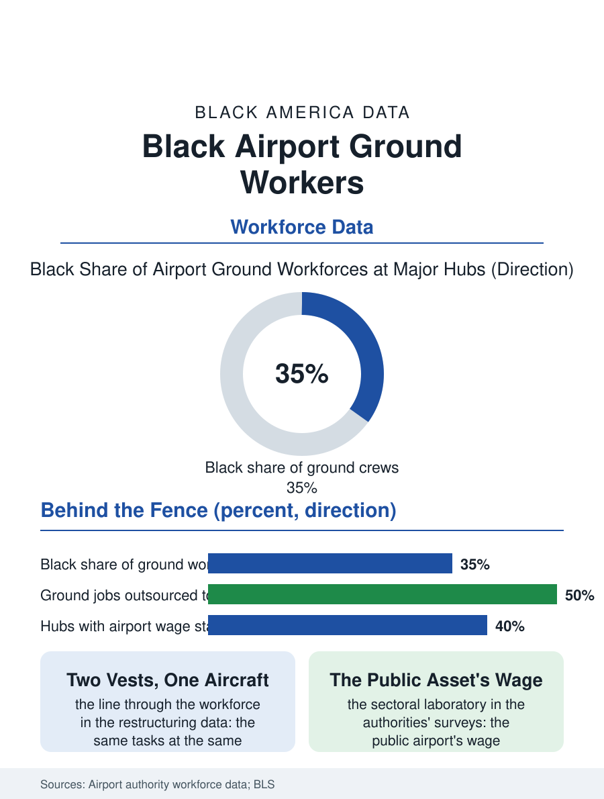

Black Employment
The City Behind the Fence: Black Airport Ground Workers
The hub's ground city, a third Black, split by the contractor's vest, winning wage standards no surrounding state sets. The airport file.

The airport is a city of workers most travelers never see: the ramp agents and baggage handlers, the fuelers and caterers, the wheelchair attendants and the cabin cleaners, a ground workforce that is among the most Black of any major workplace in the metropolitan economy, employed increasingly not by the airlines but by their contractors. This article reads the airport ground file.
The Ramp's Composition
The airport workforce's data must be assembled from the airport authorities' and the contractors' records, since the industry's statistics file the ground handlers under their contractors' industries, but the major hubs' badged workforce counts give the picture: at the great Southern and Eastern hubs, the ground workforce's Black share runs at or above the metro's own, the airport being, for the neighborhoods in its fence line's shadow, the largest single employment site in the local economy, its bus routes and its job fairs the community's standing infrastructure. The occupation ladder inside the fence runs from the ramp and the cabin service through the operations and the maintenance hangars of the mechanics file, with the airline's own uniformed tiers, the agents and the flight crews of their own files, above the contractor line that the industry's restructuring drew through the workforce in the current era: the ground handling outsourced station by station, the same tasks at the contractor's wage and benefit scale, the badged workforce's two tiers working the same aircraft in different colors of vest and different qualities of package, a division the organizing campaigns at the hubs have made their central text. The retirees of the ramp staff the airport's volunteer desks and its political memory in the same proportion.
Wages at the Gate
The airport wage file is a municipal politics file, because the airport is a public asset: the living wage ordinances and the airport labor standards that the port authorities and the city councils set for the badged workforce have made the major hubs a laboratory of the wage floor's sectoral form, the standards at the leading hubs now standing well above the state minimums around them, won by the campaigns whose membership is the ground workforce itself, substantially Black and immigrant in the pattern of the service files, and whose victories are recorded in the authorities' own wage surveys. The injury file is the ramp's own: the baggage system's weights, the ramp's moving machinery and weather, the cabin cleaner's chemical pace against the turnaround's clock, composing an occupational profile the compensation data price, and the security file overlays all of it, the badged workforce being the screened population whose background standards are the airport's own gate, with the record's exclusions falling on the workforce pool the neighborhoods supply in the pattern the licensing files describe. The pandemic collapsed the workforce with the schedule and rebuilt it in the shortage's terms, the hubs' hiring competing with the warehouse file for the same labor at wages the shortage repriced in a single season.
The City Behind the Fence
The airport file closes on the ground workforce's civic weight in its home neighborhoods, because the airport job, shift-bound and public-adjacent, is a pillar occupation of the Black working class in the hub cities in the pattern of the post office's and the hospital's, its parking lots and its break rooms a political constituency the local candidates court by name. The automation file is the horizon's: the driverless tug and the automated baggage systems in the vendors' demonstrations, aimed at the ramp's labor content in the next capital cycle, against which the workforce's organizations bargain the transition's terms in the authorities' public meetings, the airport being one of the few workplaces whose automation must be approved, in effect, in public. The authorities count the badged workforce in the tens of thousands at the great hubs. The file's last entry is the turnaround's: the aircraft at the gate, the belt loaders and the fuel truck and the cleaning crew moving in the choreography the passenger watches from the window without seeing, the Black hands of the hub's city turning the machine around in forty minutes, the industry's whole product resting, at the day's every departure, on the workforce its statistics file under somebody else's industry.
More in Black Employment
The Black Unemployment Rate: The Two-to-One Pattern
Black unemployment runs at roughly twice the White rate — 5.5 percent against 3.3 percent in annual averages — a ratio stable across five decades of federal data. How it is measured and why it persists.
Black Median Weekly Earnings: The 80-Cent Ratio
Black full-time workers earn a median of about $900 a week — roughly 80 cents for every dollar White workers earn. The BLS earnings data by group, gender, and occupation.
Black Labor Force Participation: Working at National Rates
Black labor force participation runs at roughly the national rate — and Black women participate at higher rates than White women. The BLS participation data.
Source: Major hub airport authority badged workforce reports; Bureau of Labor Statistics air transportation support data.